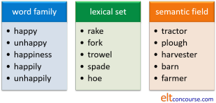
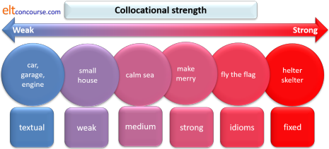

Lexical relationships

You may like to follow the guide to semantics (new tab) before tackling this but nothing which follows assumes you have.
Lexical relationships are not simple and this guide is
accordingly quite long.
If you are here for the first time, the advice is to work through it
sequentially but if you are returning to check something, here's a list
of the contents to take you to its various sections.
Clicking on -top- at the end of each section will
bring you back to this menu.
| Syntagmatic vs. paradigmatic | Homonymy | Heteronomy | Hyponymy | Troponymy | Meronymy and metonymy |
| Families, sets and fields | Synonymy | Antonymy | Contronyms | Collocation | -nym corner |
 |
Relationships between words: two key concepts |
- He immediately bought a smart hat.
What words (lexemes, if you will) can we use to replace bought, immediately, smart and hat?
hat can be replaced by almost any noun, but it must
be a noun or a noun phrase.
immediately can be replaced by any adverb but it must
be an adverbial of some kind
smart can be replaced by a wide range of adjectives but they
must be adjectives
bought can be replaced by many verbs, but they must
be verbs or a verb phrases (and they must be transitive).
So we can get, e.g.:
- He eventually sold a new hat.
- He bought a brand-new Daimler car.
- He surreptitiously stole a useful gadget.
... and so on and on and on. We can actually replace all the words in the sentence and providing we exchange word or phrase class on a like-for-like basis we will not affect the basic structure although meaning will change fundamentally.
There are two types of relationship at work here:
- Syntagmatic relationship
- This describes the relationship between, e.g., He and
bought in Sentence 1, sold and
a new hat in Sentence 2 and
surreptitiously and stole in Sentence 4.
These relationships work horizontally between words. Subjects use Verbs, Verbs sometimes take Objects, Adjectives modify Nouns, Adverbs modify Verbs and so on. The relationship is to do with syntax (from the Greek meaning to arrange together). - Paradigmatic relationships
- These are exemplified by the changes we have made between the
sentences and describe the relationships between:
bought, sold and stole
surreptitiously and eventually
useful, brand-new and new
car, gadget and hat
These relationships work vertically in the sense that Noun phrases can be replaced by other Noun phrases, Verb phrases by other Verb phrases, Adjectives by other Adjectives, Adverbs by other Adverbs and so on. The relationship is to do with word and phrase class. The word paradigmatic derives from paradigm (from the Greek meaning to show side by side).
It works like this:

Each slot in the sentence can be replaced by words and phrases in the same classes to make new sentences (some of which might make sense) virtually ad infinitum. The boxes give examples of items in a paradigmatic relationship; the red arrows show the syntagmatic relationships.
Because this guide is to do with lexis, it is paradigmatic relationships between words that concern us most here. However, when words are combined with grammar to make meaning, syntagmatic relationships become important.
 |
Paradigmatic relationships |
 |
Homonymy |
The word homonym derives from the Greek meaning same name.
See if you can come up with a definition of the following terms:
homograph, homophone, homonym, heteronym.
Click
here
for a run-down when you have something in mind for all
four.
- HOMOGRAPH
- words which are written identically but
may or may not be differently pronounced and which have different
meanings
For example:
The mean temperature is over 20.
I mean to buy some new shoes.
(pronounced /miːn/ in both cases)
I read The Sun usually but yesterday I read The Times
(pronounced as /riːd/ and /red/ respectively)
Lead is softer than iron (/led/)
Lead on! (/liːd/)
Where's the dog's lead? (/liːd/)
Words in this category which are pronounced differently but spelled identically are often analysed as heteronyms (see below). - HOMOPHONE
- words which sound the same but are written differently and have different meanings
For example:
The religion's rites.
He writes every morning till 11.
I know my rights.
(all pronounced as /raɪts/)
No, you don't know them.
(both pronounced as /nəʊ/)
Homophones can be notorious traps, not only for learners of English, and sets such as:
pours, pores, pause and paws
cause a good deal of difficulty, sometimes because speakers think they ought to be pronounced differently (they are all pronounced /pɔːz/ in standard English). - HOMONYM
- Strictly speaking, these are words which
look and sound the same but have different
and wholly unrelated meanings
For example:
Can you bear a bear in the house?
He left by the left-hand door.
Warning: In casual, non-technical parlance, the term homonym is used for all three categories but there are differences and you should be aware of them. Obviously, there is some overlap between the terms:
If you would like to see a short lesson for more advanced learners focusing on homophones there is one here. You could integrate into your teaching quite easily.
- HETERONYM
- Heteronyms are sometimes called heterophones and are words
written identically but which have different pronunciations
and meanings. They are, to put it another
way, homographs that are not homophones and may be considered a
sub-set of homographs.
(Technically, the term heterophone applies to all words in a language which are pronounced differently and that would include all the words of the language, of course, barring homophones.)
Examples include:
They had a terrible row (/raʊ/)
They'll row the boat (/rəʊ/)
Don't stand to close to the fire (/kləʊs/)
Close the door behind you (/kləʊz/)
Don't abuse the your authority (/əˈbjuːz//)
That's abuse of authority (/əˈbjuːs/)
They made a record (/ˈrek.ɔːd/)
Please record the most important points (/rɪk.ˈɔːd/)
One of Scotland's most important exports is whisky and the firm exports it all over the world (/ˈek.spɔːts/ vs. /ɪk.ˈspɔːts/)
The last two of these, record and export, are examples of stress shifting which often occurs (along with other changes) when a word can be both a verb (with the stress on the second syllable) and a noun or adjective (with the stress on the first syllable).
For more on this and the other changes which occur, see the guide to word stress, linked in the list of related guides at the end.
Another definition of heteronyms not further considered here is two words which mean the same but are used in different varieties of a language. For example, in Britain the term nappy is used to describe baby clothing but in the USA the term is diaper. In Scotland the word wee is often used to mean what elsewhere in the English-speaking world is just described as small. The words are heteronyms, referring to the same idea in different ways.
 |
Polysemy |
We saw above that homonyms are words which look and sound the same but have different and unrelated meanings.
However, there is a cline between completely unrelated meanings
and meanings which are obviously related. The problem is that
this is a continuum, not an either-or issue.
For example, you may feel that the use of umbrella in:
Take an umbrella in case it rains
and
This all comes under the umbrella of lexical
relationships
is the same word used with a slightly different (metaphorical)
meaning and many would agree with you. They do not,
therefore, count as homonyms. However, the situation is far
less clear with a word like screen in:
The film was first screened last year
and
We screened the new plants from the wind
You may feel that the word is used in such a different way in these
sentences (projecting and protecting respectively) that it is an
example of homonymy.
Others may feel that, because both words refer to a flat surface of
some kind, they are clearly not wholly different and qualify as
polysemes (words used with different but related meanings), rather
than homonyms.
There is a guide to polysemy, linked below, which considers this
matter in much more detail and concludes, inter alia, that
the distinction is in principle
impossible to identify precisely.
 |
Hyponymy |
a relationship between words in which the meaning of one word includes the meaning of others which are closely related
The word derives from the Greek meanings of under and name.
- The superordinate or hypernym
- is the word which includes the meanings of all the others
- The hyponyms
- are all the second-level words which are related to each other

A: Given these hyponyms, can you think of a suitable hypernym or
superordinate?
car, coach, motorcycle, bus, tram, scooter, moped
B: Given this hypernym or superordinate, can you think of five
lower-level hyponyms?
currency
Click
when you have 1 hypernym and 5 hyponyms.
Something like:
A: vehicle
B: rupee, dollar, pound, euro, yen
The situation can be complicated because it is not always a simple two-level relationship. Hyponyms can themselves be hypernyms so we may have, for example:
Levels 1, 2 and 3 may also be described as superordinate (level 1), coordinate (level 2) and subordinate (level 3).
Often as the examples show, the superordinate is a mass noun but the levels below, the hyponyms of each other, are count nouns. So, for example, the subordinate mass noun equipment will have a set of count-noun hyponyms below it which might include tool, oil, screwdriver, hammer, wrench and so on.
It is possible to trace hyponymy relationships back and back (up and up in trees like the one above) until one arrives at superordinates so large in their coverage that they become unusable for any day-to-day purposes. So, for example, we can have:
| Level | Superordinate | Hyponyms |
| 1 | lubricants | oil, grease, fat |
| 2 | petroleum products | lubricant, petrol, diesel, gasoline, kerosene |
| 3 | liquids | petroleum products, water, vinegar, blood |
| 4 | inanimate substances | liquid, solids, gases |
and any of the hyponyms above Level 1 can themselves form hypernyms and generate more subcategories virtually ad infinitum.
This relationship is not, of course, confined to nouns. We can also have:
Adjectives
In the case of adjectives, it is often important to consider their
collocational characteristics because, for example, hyponyms of
big will collocate differently and be dependent on the noun
they modify:
huge tree, not *great tree
great problem, not *full-sized problem
etc.
Verbs
and in this case, there is what is known as a relationship of
troponymy because all the second-level hyponyms are
expressive of the manner of doing something, i.e., they are
different ways of cleaning. Other examples include
different ways of eating, walking, sleeping etc.
which would include nibble, gorge; saunter, stroll; nap, doze
respectively.
Troponymy makes a useful teaching aim, especially at more advanced
levels, because there is some evidence that we store and retrieve
verb lexemes by conceptual association.
Teaching implications
- Hypernyms have greater range (they describe more of reality) so they are important to know. If learners don't know the exact word for something, it's useful if they have a hypernym to hand. You may not know what sort of tree you are sitting under but you do know it's a tree.
- Unfortunately, many hypernyms sound unnatural when used in
informal speech. Would you prefer
We need a new goods vehicle
or
We need a new truck? - There is some evidence that one of the many ways the brain
stores lexis is related to hyponymy so it makes sense to teach
hyponyms together.
This is especially true when we consider various levels of hyponymy (as above) because the brain can make sense of this sort of categorisation into subgroups.
It can be productive as a classroom research exercise to get learners to develop their own hyponym trees as the ones above and see how they can build pictures of the relationships between words and add to their own lexicons in so doing. - Hyponymy is variable across cultures and from individual to individual in many cases, so learners need the data to refine their understanding of what may and may not be included under a particular hypernym or superordinate. For example, in English, the hypernym furniture will not include wall hangings, carpets or filing cabinets (probably) but some individuals and some cultures will include these lexemes. For more, see the guide to semantics linked in the list of related guides at the end.
 |
Meronymy and metonymy |
Allied to the concept of hyponymy is that of meronymy which relates to the whole and its parts. For example:
In this case, the technical term for the tricycle is the holonym (whole name) and each of the parts are described as meronyms of it.
There is some evidence, too, that the brain stores vocabulary in
this way (among others) by a process akin to word association so
that, for example, it becomes easier to recall words such as
wings, beak, feathers, crop, claws etc. when the memory has
been primed by the word bird.
There is a teaching implication here, too, of course, which is that
words can often be effectively presented and learned in the context
of larger wholes.
Meronymy is the phenomenon which leads to a form of synonymy known
as synecdoche in which a part is seen as a synonym
for the whole, so, for example, we can use head or face
to refer to the whole of a person or people as in:
There are some new faces in the class
or
Do a head count
Synecdoche also works in reverse by using reference to the
whole to refer to a part as in, for example:
Germany have won the game
by which is meant, of course, the German team, not the whole
country.
It's pronounced /sɪ.ˈnek.dək.ɪ/, by the way.
A similar relationship is called metonymy and this refers to the
use of a term to mean the greater entity with which it is closely
associated. For example,
Number 10 has scheduled a vote in the House
for next Thursday
where the term Number 10 is simply the first part of
address of the British Prime Minister's office (10 Downing
Street) and is used to refer to the British government in
general in the same way that Washington or The White
House are used to refer to the American government and the
President's office respectively.
Metonymy is commonly used to refer to the occupants of a place so,
for example, we may encounter:
Room 6 will need to move
in which we are not referring to the room but to the people who
usually occupy it.
By the same token, something like:
The top floor will want to be kept informed
refers to the people who are to be found there, not the floor.
 |
Word families, lexical sets and lexical fields |
This is a notoriously difficult area because different authorities define these terms differently. (So if you are writing or talking about them, make sure you say what you mean by the terms.) On this site, the terms are defined like this because for teaching purposes, it seems the most useful. It is not intended that this is an original contribution to the science of semantics:

Because the area is replete with conflicting definitions of terms, there's quite a strong argument that the categories are not useful for the purposes of analysing meaning relationships. However, there is some evidence that storage and recall of words may be partly, at least, based on relationships like these.
It is rather difficult to assign certain types of words to all the
possible groupings.
For example, while a term like yellow can easily and
obviously be assigned to the lexical set of colour, it is
difficult to think of other members of the word family and even more
difficult to assign such an adjective to a semantic field.
Abstract concepts such as interesting can often be assigned
to a word family along with interest, disinterested,
uninterested etc. but the field into which it could be placed
is probably too amorphous to be of much help to learners –
personal reactions, perhaps? It also falls into no obvious
semantic field.
The issues:
- Word family

- the term lexeme differs from what most people
understand as word in two ways:
- a lexeme may be made of multiple words so, for
example
off the cuff
hard up
in spite of
air conditioning unit
fly in the ointment
and so on are all lexemes because they refer to a single concept. - a lexeme also includes the inflected forms of the
item so, for example:
does, do, did, done, doing
are all just aspects of a single lexeme, do, not separate units of meaning.
If you look in the dictionary for a definition of, say, spoken, you will be well advised to look under the verb speak because that is the central lexeme form. It is known, in the trade, as the lemma or heading.
- a lexeme may be made of multiple words so, for
example
- The upshot is that it is hard to define where a lexeme
(and its various forms) ends and where we are entering the
realm of a word family. It is clear that:
speak
speaks
spoke
speaking
spoken
are all part of the same lexeme (and will be found under the lemma speak) but less clear whether:
speech
speechify
speechless
unspoken
unspeakable
and so on
can also be included in the lexeme.
If they are not and will be found under a separate lemma, then we are dealing with a word family, not a single lexeme.
A word family is a wider concept and will include all the items derived from the base component. - Unfortunately, the term word family is also used to
refer to a completely different relationship to do with
common sound-spelling patterns such as:
ate, crate, date, fate, gate, late, plate, skate, state
and so on or
bloom, boom, broom, doom, gloom, groom, loom, room, zoom
which can be learned as sets by children to help them pronounce and spell words. That doesn’t seem a helpful definition for English language teaching purposes but may have some utility especially if we recognise that there is some evidence to suggest that sounds patterns are also one way in which lexis is memorised, categorised and recalled.
It may therefore be of some utility to approach patterns of, say, irregular verbs as families such as:
ring, rang, rung, sing, sang, sung, begin, began, begun, sink, sank, sunk
and
send, sent, sent, bend, bent, bent, lend, lent, lent, pend, spent, spent
which have similar ablaut forms as a way of helping learners to remember patterns.
Even more confusingly, some people will refer to that relationship as containing words in the same lexical set. That way, madness lies.
- the term lexeme differs from what most people
understand as word in two ways:
- Lexical set

This term is sometimes used to mean the same thing as semantic set. It is, unfortunately, an equally variably defined idea, but the line taken on this site is that it refers to words of the same class defined in one of two ways:- By topic or field (in a narrow sense):
street, alley, square, place, avenue, road, cul-de-sac, crescent
etc. all refer to the same topic and are all nouns making a lexical set.
A set of hyponyms by this definition, would form a lexical set. So, for example:
train, bus, coach, tram, ferry, passenger plane, subway, metro
would be a lexical set derived from the superordinate means of public transport and would exclude many other vehicles. If we change the superordinate, the lexical set can shrink or grow accordingly so making the superordinate powered vehicle means that the set grows to include car, truck, liner, cargo ship, lorry and more. Changing it to land-based means of public transport and the lexical set shrinks to exclude some of the items.
Lexical sets are very useful ways of classifying and presenting lexis in the classroom but a superordinate which includes too many terms under its umbrella will not be very helpful so, for example, the superordinate liquid will include so many possible lexemes in the set that all sense of category is lost whereas, cold drink will result in a manageable and learnable set.
It is possible to define a lexical set by word class so, for example, we could have a set of similar items which might include
dig, cultivate, water, fertilise, rotate, sow
etc. all functioning as verbs and assignable to a parallel lexical set to the one in the diagram above.
The same can be done for other word classes including adjectives and adverbs. - By syntax:
frequently, often, usually, never, seldom
etc. are all adverbs of indefinite frequency sharing certain syntactical characteristics (usually occurring before main verbs and following any auxiliary verbs, for example). Another example is the verbs:
give, offer, read, sell, send, tell
which are all ditransitive verbs and appear in the same kind of syntactical structures.
A better way to describe relationships like this is to refer to colligation (common structural characteristics).
- By topic or field (in a narrow sense):
- Semantic or Lexical field
The problem lies in the way in which ‘field’ is understood.- From a genre perspective, field refers to the topic of a discourse, so some feel justified in referring to a group of any words (whatever their word class) which are typically used in that register as a lexical field. That is the line taken here because it seems a useful concept for teaching purposes. If one were talking or writing, for example, about car production, then it is important to be able to use the lexis related to the area: assembly line, design, standardise, model, research, investment, economy, components, version, raw materials, parts suppliers, robots etc.
- From a semantic point of view, that is too loose a
definition and a lexical field is confined to a group of
words which are related in meaning to each other
according to a set of defined features.
For example, when talking about horses, one needs to consider stallion, foal, mare, hunter, carthorse, thoroughbred, racehorse etc. which are all defined by age, sex or intended employment.
In that definition, a term such as Exmoor Pony or Arabian would lie outside the field because they refer to particular breeds rather than age, sex and intended employment (which are the only three features we are considering). They can readily be included in the field by widening the range of features one wants to include (and adding ‘breed’). Other common examples of semantic fields (rather than the loose lexical field) are words for different ages and sexes of sheep, human family members, types of software and so on.
A semantic field can only be determined by knowing the features which the organiser chooses to include.
That can be very broad and include words of different classes or very narrow and only include closely defined features.
Given this confusion, it is understandable that the terms have fallen out of favour but, providing you define your terms, there is no reasons not to include concepts like these in teaching programmes.
Synonymy |
Loosely, this means words of the same meaning but they don't always mean exactly the same to all people and often aren't interchangeable. They are affected by a number of factors. What factors are working in the following pairs to separate meaning? Click here when you have a list of the factors.
| 1 | He got in the lift He got in the elevator |
| 2 | I'm gutted I'm very disappointed |
| 3 | I'm going to go I intend to go |
| 4 | Turn right Turn starboard |
| 5 | Angry demonstrator Angry protester |
Sentences in pair 1 contain synonyms but in different varieties
(BrE and AmE in this case, i.e., by one definition, these are hypernyms).
Sentences in pair 2 contain synonyms but with different levels of formality
(i.e., style) and
appropriate in different settings.
Sentences in pair 3 contain phrasal synonyms but are structurally different.
Sentences in pair 4 contain synonyms but in different registers
(general and nautical).
Sentences in pair 5 contain synonyms but with different connotations.
 |
Synonymy and collocation |
We cannot assume, incidentally, that synonyms will also collocate
in the same ways so, for example, although big, large and
great are usually considered synonyms, their collocational
behaviour is not parallel.
We can have all of:
big number
big amount
large number
large amount
great number
great amount
and
big scale
and
large scale
but not
*great scale
Equally, we encounter
large extent
and
great extent
but not
*big extent
and we can have
great interest
and
great importance
but
*big interest
*big importance
*large interest
and
*large importance
are not naturally occurring collocations.
There is a guide to synonymy linked at the end in the list of related guides which considers some of the other dangers of using synonymy to explain meaning in the classroom.
Antonymy |
Antonymy refers, as you are no doubt aware, to words which have opposite meanings. However, there are three types of antonymy.
Here are the three main sorts. Can you describe the differences? Click on the table when you have an answer.


- Gradable antonyms
- don't turn into their opposites when you put not before them. Not short does not mean tall. It could mean of average height, long etc. Another example is wet vs. dry where we imagine a cline with wet at one end and dry at the other with all kinds of degrees of wetness and dryness in between (moist, damp, soggy, clammy etc.).
- Converse antonyms
- also don't turn into opposites with the addition
of not. Not male does not automatically
mean female. A rock is not male. They are
antonyms which demand the existence of the opposite concept.
You can't say his sister without implying her brother.
A large subset of converse antonyms are sometimes referred to as relational antonyms because they frequently refer to relationships between the items they refer to. So, for example, employer is a converse antonym of employee because each implies the existence of the other.
Another subset of converse antonyms is formed by directional antonyms such as up-down, left-right, north-south, out-in etc. in which one of the pair automatically implies the existence of the other. - Complementary antonyms
- do become the opposites with
the insertion of not. Not reliable has to
mean unreliable, not dead means alive and not flawed has to mean
flawless. As we saw, on the other hand, not my brother and
not white don't necessarily mean my sister or
black respectively.
Complementary antonyms are sometimes refereed to as binary or mutually exclusive antonyms.
 |
Morphological antonymy |
Many antonyms of any of the three sorts so far described are
derivational so we get complementary pairs such as:
pleasant–unpleasant
please–displease
like–dislike
friendly–unfriendly
anti-democratic–pro-democratic
possible–impossible
appear–disappear
do–undo
and so on and a few are formed by suffixation with the only
negative-forming suffix in English, -less, such as:
useful–useless
hopeful–hopeless
cheerful–cheerless
but this is very inconsistent and there are no pairings with, for
example:
clueless
friendless
moneyless
dreadful
respectful
and
beautiful
although the antonyms may be coined as nonce words from time to
time.
An alternative way to analyse antonymy is into two types only:
- Ungraded antonyms which are exclusive, for example:
open vs. shut
pass vs. fail
dead vs. alive
married vs. unmarried
on vs. off
etc. - Graded antonyms which represent parts of a continuum and are
relative terms, for example:
old vs. young
large vs. small
hot vs. cold
sunny vs. cloudy
smooth vs. rough
etc.
In the case of graded antonyms, relativity concerns the fact that
while a mouse is small relative to a house, it is large
relative to a flea and what may be described in Britain as a hot
day, would be described as warm in a hotter climate.
For teaching purposes, the simpler two-category distinction is often
enough.
 |
Markedness |
Antonyms are marked in English (and in most languages, although
not always in parallel ways) with one of the pair forming the
unmarked item and the other being marked. For example, the
usual question is:
How old is the dog?
rather than:
How young is the dog?
because, even if the dog in question is obviously a puppy, the
second form is marked for a presumption that the dog is young.
Markedness does not only apply to adjectives, of course, so, for
example, lion and lioness may be considered
converse antonyms, only the latter is marked for sex. We see
the reverse, but rarer, marking in, e.g., bride and
bridegroom.
See the guides to markedness and to gender linked below, for more in
this area.
 |
Collocation |
It might be assumed that antonym pairs will exhibit more or less
the same collocational aspects as each other but that proves not to
be the case when research is done using the data in a corpus.
What is found is that some of the words collocate in very different
ways from their antonyms. For example, we frequently find:
big brother
big mistake
big picture
and so on but far less frequently encounter:
small brother
small mistake
small picture
We also find:
tall trees
tall buildings
wide variety
wide array
but do not even allow:
*short trees
*short buildings
*narrow variety
*narrow array
and conversely,
narrow path
narrow gap
are more frequent than:
wide path
wide gap
(Data from Lee, 2013)
 |
Incompatibility |
A final issue with antonymy is the concept of
incompatible words. We cannot, for example say:
*That's a colourful monochrome
picture
because the words colourful and monochrome,
while not being antonyms per se, are mutually
incompatible and nothing can be described as having both
characteristics.
On the other hand:
That's a striking monochrome picture
is acceptable, because striking and
monochrome are not incompatible.
With nouns, too, the phenomenon is observable because we can
have:
That's a tulip and a real beauty
but not, of course,
*That's a tulip and a daffodil
The distinction here is sometimes referred to as words
which have a relationship known as taxonomic sisters.
One of the set excludes the others so, for example, nothing
can be both blue and red simultaneously.
There are small semantic sets of multiple incompatible words
in all languages which are mutually exclusive without being
antonymous. For example:
seasons, months and days
items of cutlery
colours
types of tree
and so on.
Some groups are confined to handful of items, others are
very large.
 |
Contronyms |
There are a few words in English which can be antonyms of themselves.
The words are polysemous in the sense that they carry two meanings
(as many words do) but are unusual in carrying two
opposite meanings. The
words are often homonyms in Modern English but have different roots
in Old English.
Here's a short list:
| Word | Meaning 1 | Example | Meaning 2 | Example |
| *chuffed | very pleased | She was chuffed to pass | displeased | She was chuffed to fail |
| †cleave | join or adhere | He cleaved to his original ideas | split | She cleaved the fruit in two |
| clip | attach | I clipped the receipt to the bill | remove | She clipped the corner off the ticket |
| dust | remove dust | I dusted the room | add dust | The police dusted for fingerprints |
| fast | fixed in place | I nailed it fast | moving quickly | He drove fast |
| lease | rent from | I leased a flat from them | rent to | We have leased the flat to him |
| off | activated | The bomb went off | deactivated | I switched the light off |
| oversight | neglect | Missing that was a serious oversight | control | The accountant has oversight of all expenditure |
| precious | very valuable | He lost some precious time | valueless / trivial | There's precious little time left |
| sanction | permit | I sanctioned his expenses | penalise | There are sanctions imposed against the country |
| screen | show | The cinema screened the movie | hide | I screened the picture from view |
| seed | add seeds | I seeded the lawn | remove seeds | I seeded the grapes |
| strike | refuse to act | The workers struck immediately | act decisively | The government struck an agreement |
| temper | strengthen | Re-heating and cooling will temper iron | soften | His anger was tempered by my excuse |
| trim | add decoration | They trimmed the skirt with ribbon | remove excess | I trimmed the paper to fit |
† The word cleave is actually a homonym because the meaning of stick together is derived from the Old English clifian and the meaning of separate from the Old English cleofan. The meanings are not connected.
The words are variously known as contronyms, contranyms, autantonyms or Janus
words. Longer lists are available by searching the internet,
of course, but many of the examples are very questionably true
contronyms. Some lists mistakenly include simple homophones.
There are obvious implications for learner confusion if any of these
words have only been met in one sense and are then found in the opposite
sense.
Collocation |
This is a large area and the following only scratches the surface.
See the dedicated guides, linked below, for more.
Essentially, collocational relationships can be show like this:

Can you think of an example for each category? Click when you have 6 examples. Work from right to left.
- Fixed collocations
- are, as in the example above, often binomials such as chalk and cheese, hit and miss, trial and error and so. They are used as if they were single words and you cannot replace a word or reverse the ordering and maintain the same meaning.
- Idioms
- are also semi-fixed expressions which often represent a single
concept. For example:
throw in the towel
bury the hatchet
and in some, such as the first example, you may be able to replace towel with sponge but few other changes are possible although tense and persons can change and we may be able to insert adjectives and adverbs.
There is a guide to idiomaticity, linked at the end, which also includes consideration of binomials. - Strong collocations
- are those that will often immediately spring to a
native-speaker's mind when presented with part of the phrase.
Other examples might include:
pay a compliment
establish rapport
light a fire
fairy godmother
etc. - Medium-strength collocations
- are those in which there is more flexibility but the
selection of items is limited. Other examples include:
dense fog
deadly poison
activity holiday
etc. - Weak collocations
- are those in which a wide range of items are possible but
some are excluded. For example:
high building
narrow road
arrange the furniture
and so on. - Textual collocation
- refers to the fact that words
in the same field (see above) will occur together in texts on
certain topics. For example, a text concerning transport might
well contain:
fuel, public, cars, transport, commute, fare
etc. and one concerning information technology is likely to include terms such as:
network, connection, wi-fi, program, access point, cloud, download, router
etc.
See above under lexical field for more.
Naturally enough, we cannot categorise every collocation we meet simply into one of six categories. The strength of collocation operates on a cline from non-existent to overwhelming.
See above under synonyms and antonyms for a little more about collocation in those respects.
-nym corner |
Any investigation of lexis will reveal a goodly number of words ending in -nmy or -onomy. Here's a crib sheet:
- Acronym [/ˈæ.krə.nɪm/]
- A word made of the initial letters
of a phrase which are pronounced as one word.
For example, NATO.
Words which are so formed but in which each letter is separately pronounced (such as DVD) are called initialisms.
See the guide to word formation for more. - Antonym [/ˈæn.tə.nɪm/]
- A word carrying an opposite meaning (see above).
For example, good is an antonym of bad. - Autoantonym / Contranym / Contronym [/ˌɔː.təʊ.ˈæn.tə.nɪm/, /ˈkɒn.trə.nɪm/, /ˈkɒn.trəʊ.nɪm/]
- A word which has two opposite meanings (see above).
For example, cleave can mean split or stick together with. - Autonym [/ˈɔː.təʊ.nɪm/]
- A word used by a group of people to describe themselves.
For example, Brit is often used by British and other people to describe people from Britain.
Compare exonym. - Demonym [/ˈde.məʊ.nɪm/]
- An adjective which refers to the people of a country or
place.
For example, Dutch refers to people from The Netherlands, Berliner refers to people from Berlin and Liverpudlian refers to people from Liverpool.
See the guide to adjectives for more. - Econym [/ˈiːk.əʊ.nɪm/]
- A word or phrase used only within a family or household and not accessible for outsiders. Often words for gadgets and some favourite dishes are econyms such as Aunt Mabel's Fish Pie.
- Eponym [/ˈdep.əʊ.nim/]
- These refer to objects closely associated with a person or
character or the nature of the person.
For example, wellington boot is a term associated with its wearer, The Duke of Wellington. - Exonym [/ˈeks.əʊ.nim/]
- A name by which one group of people refers to another
describe a group of people but which is not used by that group
to describe themselves.
For example, gringo is sometimes used by Latin Americans to describe citizens of the USA. Notoriously, the adjective English is used by non-English people to refer to anyone from Britain and Northern Ireland but no resident of the United Kingdom uses the term that way. - Heteronym [ˈhetər.əʊ.nim/]
- a) words which have the same spelling
but a different pronunciation and different meanings.
For example, lead (go before) vs. lead (a metal).
b) words which refer to the same thing but are used in different dialect or speech communities.
For example lift (British English) vs. elevator (American English). - Holonym [/ˈhɒ.ləʊ.nim/]
- The term to describe the whole of something made up of parts (see under meronym). So, for example, cover, fly leaf, frontispiece, index etc. are all meronyms of the holonym book.
- Homonym [/ˈhɒ.mə.nɪm/]
- A word which is the same in spelling and pronunciation but
which is differently derived and has a different meaning (see
above).
For example, bear (carry) and bear (animal). - Hypernym [/ˈhaɪ.pər.nim/]
- The overarching word which contains the meanings of
second-level words (hyponyms).
For example, flower is a hypernym of dahlia, buttercup, daffodil etc. - Hyponym [/ˈhaɪ.pəʊ.nim/]
- These are the second-level word below a hypernym (see above).
- Meronym [/ˈme.r.əʊ.nim/]
- The part of a whole.
For example, flat, lift, entrance hall, lobby etc. are parts of the whole apartment block. - Metonym [/ˈmet.əʊ.nym]/
- A word closely associated with something and which can be
used to refer to it.
For example, Athens may be used to refer to the Greek government.
See the guide to synonymy for more. - Paronym [/ˈpæ.rəʊ.nim/]
- A cognate word in another language.
For example, the words paper, papel, papír and papier are cognates in English, Spanish, Hungarian and French respectively.
There is a guide to cognates on this site. - Retronym [/ˈret.rəʊ.nim/]
- A word which has been coined to describe something obsolete.
For example, the lexeme rotary telephone describes what would have been referred to simply as telephone before the advent of touch-button dialling.
See the guide to word formation for more. - Synonym [/ˈsɪ.nə.nɪm/]
- A word which has an identical or nearly identical meaning
(see above).
For example, large and big.
See the guide to synonymy for more. - Toponym [/ˈtɒp.əʊ.nim/]
- A word derived from the name of a place.
For example, the word marathon is derived from the name of a place in Greece.
See the guide to word formation for more. - Troponym [/ˈtrɒp.əʊ.nim/]
- A word which more narrowly defines another concept.
For example, the word stroll is a troponym of walk because its meaning contains the idea of walking slowly in a relaxed manner.
See the guide to synonymy and above for more.
| Related guides: | |
| idiomaticity | which considers levels of transparency, strong collocation, binomials and so on |
| collocation | a more detailed guide |
| cognates | for more on relationships across languages |
| word class | for the map and links to the whole area of lexis |
| word stress | for a little more on heteronymy |
| polysemy and homonymy | which considers how words vary in the level of identity of meaning |
| synonymy | which includes explanations of metonymy, synecdoche, simile, metaphor and hyponymy and teaching ideas |
| markedness | for more in the ways that antonyms are marked or unmarked |
| gender | for more concerning lexemes and gender marking |
| semantics | which considers meaning in considerably greater depth |
| teaching and remembering lexis | this guide includes some teaching ideas |
| word formation | to see how lexemes are formed |
Click for a test in the area.
References for lexis
and vocabulary:
French Allen, V, 1983, Techniques in Teaching Vocabulary,
Oxford: Oxford
University Press
Gairns, R & Redman, S, 1986, Working with Words: A Guide to Teaching
and Learning Vocabulary, Cambridge: Cambridge University Press
Hoey, M, 2006, Lexical Priming: A New Theory of Words and Language,
London: Routledge
Lee, H-K, 2013, Antonymy and gradability: A corpus-based approach,
Linguistic Research 30(2), 335-354
on English gradable antonyms
Lewis, M, 1997, Implementing the Lexical Approach, Brighton,
UK: Language Teaching
Publications
Lewis, M, 2002, The Lexical Approach, Thomson ELT
Lindstromberg, S & Boers, F, 2008, Teaching Chunks of Language: From
Noticing to Remembering, Helbling Languages
McCarthy, M, 1990, Vocabulary, Oxford: Oxford University Press
Morgan, J & Rinvolucri, M, 1986, Vocabulary, Oxford: Oxford University Press
Schmitt, N, 2000, Vocabulary in Language Teaching, Cambridge: Cambridge University
Press
Schmitt, N & McCarthy, M, 1997, Vocabulary: Description, Acquisition
and Pedagogy, Cambridge: Cambridge University Press
Thornbury, S, 2002, How to Teach Vocabulary, Harlow: Longman